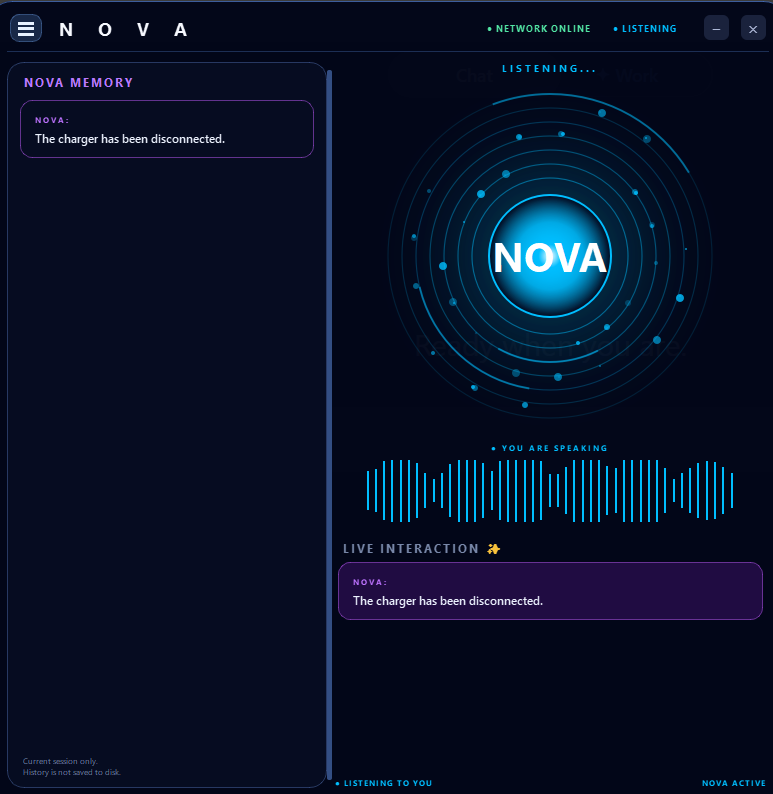

PYTHON · AI · NLP · AUTOMATION
NOVA
AI-Powered Intelligent Personal Assistant
A Python-based intelligent personal assistant designed to understand voice and text commands, search the web, summarize information and automate everyday tasks.
ABOUT THE PROJECT
What is NOVA?
NOVA is an AI-powered intelligent personal assistant developed using Python.
It combines voice recognition, Natural Language Processing, intent classification, question answering, web information retrieval, summarization, automation and text-to-speech.
NOVA can interact with the user through both voice and text and provides an interactive PyQt5 desktop interface.
NATURAL LANGUAGE PROCESSING
Understanding the user.
From spoken words to useful actions.
NOVA uses Natural Language Processing techniques to process user input and understand what the user is asking.
The assistant can classify user intent, match questions with its knowledge base, process text and select an appropriate response or action.
DEEP SEARCH
Search the web. Find the best answer.
Multi-Source Web Search
NOVA can perform a deep search when the user needs information from the web. Instead of depending on a ChatGPT API or Google API, NOVA can collect information from multiple search sources and identify useful information.
The search workflow can use sources such as Brave Search, DuckDuckGo and Microsoft Bing through Edge. The collected information can then be processed and summarized to provide a concise response.
PROJECT DEMO
See NOVA in action.
NOVA REFERENCE
The NOVA interface.

Animated NOVA Orb & Assistant Interface
The NOVA interface provides a visual representation of the assistant with the central orb, orbit rings, status information and interactive assistant layout.
MAJOR MODULES
How NOVA works.
Voice Input
Captures spoken commands and converts speech into text.
NLP & Intent
Processes user input and identifies the appropriate intent.
Q&A
Uses a local knowledge base for supported questions and responses.
Deep Search
Searches multiple web sources and gathers relevant information.
Summarization
Processes collected information and produces a concise summary.
Automation
Performs supported Google, YouTube and computer operations.
GUI
Provides a PyQt5 interface with NOVA Orb and assistant states.
Text-to-Speech
Converts NOVA's responses into natural spoken output.
Conversation
Maintains the interaction between the user and the assistant.
TECHNOLOGIES
Built with Python & AI.
PROJECT STATUS